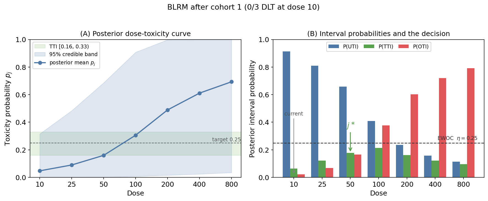

The Bayesian Logistic Regression Model (BLRM) for Phase I Dose-Finding
Introduction
The goal of a Phase I oncology trial is to identify the maximum tolerated dose (MTD) from the observed toxicity profile. Rule-based designs such as the 3+3 are simple, but they use only the current cohort and have well-known inefficiencies. Model-based designs instead fit a dose-toxicity curve to all accumulated data and use that curve to assign each new cohort to the most appropriate dose. The Bayesian logistic regression model (BLRM), a modification of the continual reassessment method (CRM), is one of the most widely used model-based designs.
This post describes the BLRM design as it is actually implemented in the BLRM_trial repository. I state the decision and stopping rules precisely, work through one cohort by hand, and then show a deterministic computation that replaces MCMC and runs roughly three orders of magnitude faster.
The dose-toxicity model
Let \(p_j\) be the probability of a dose-limiting toxicity (DLT) at dose level \(j = 1, \dots, J\), let \(d_j\) be the dose, and let \(d^\ast\) be a fixed reference dose. BLRM assumes a two-parameter logistic dose-toxicity curve:
\[ \operatorname{logit}(p_j) = \log \alpha + \beta \, \log\!\left(\frac{d_j}{d^\ast}\right). \]
The curve is required to be monotonically increasing in dose, which means the slope \(\beta\) must be positive. This is enforced by placing the prior on the log scale:
\[ (\log \alpha, \, \log \beta)^\top \sim \mathcal{N}_2(\mu, \Sigma), \qquad \beta = \exp(\log \beta) > 0 . \]
Writing the linear predictor as \(\theta_1 + e^{\theta_2}\log(d_j/d^\ast)\) with \(\theta_1 = \log\alpha\) and \(\theta_2 = \log\beta\) makes the slope \(e^{\theta_2}\) positive for every value of \(\theta_2\). Positivity of \(\beta\), and therefore monotonicity of the curve, is automatic rather than a constraint that has to be imposed during sampling.
The prior covariance is
\[ \Sigma = \begin{pmatrix} \sigma_\alpha^2 & \rho\,\sigma_\alpha \sigma_\beta \\ \rho\,\sigma_\alpha \sigma_\beta & \sigma_\beta^2 \end{pmatrix}, \]
and the repository default is \(\mu = (\log 0.5, \, 0) = (-0.693, \, 0)\), \(\sigma_\alpha = 2\), \(\sigma_\beta = 1\), and \(\rho = 0\).
Toxicity intervals
Split the unit interval \([0, 1]\) at two cutpoints \(0 < c_1 < c_2 < 1\) into three non-overlapping intervals:
- Under-dosing interval (UTI) \(= [0, c_1)\)
- Target interval (TTI) \(= [c_1, c_2)\)
- Over-dosing interval (OTI) \(= [c_2, 1]\)
The repository uses \(c_1 = 0.16\) and \(c_2 = 0.33\), a common choice around a target DLT rate of roughly 0.25 to 0.30. Given the accumulated data, each dose carries three posterior interval probabilities:
\[ \pi_j^{U} = \Pr(p_j < c_1 \mid \text{data}), \quad \pi_j^{T} = \Pr(c_1 \le p_j < c_2 \mid \text{data}), \quad \pi_j^{O} = \Pr(p_j \ge c_2 \mid \text{data}), \]
and they sum to one, \(\pi_j^{U} + \pi_j^{T} + \pi_j^{O} = 1\). The whole design is driven by these three numbers at each dose.
The dose-selection rule
The rule has two ingredients: a safety constraint and a target criterion.
1. Escalation with overdose control (EWOC). A dose is admissible only if its posterior over-dosing probability is below a pre-specified threshold \(\eta\):
\[ \mathcal{F} = \{\, j : \pi_j^{O} < \eta \,\}. \]
The traditional threshold is \(\eta = 0.25\).
2. Target criterion. Among the admissible doses, select the one that maximizes the target probability:
\[ j^\ast = \operatorname*{arg\,max}_{j \, \in \, \mathcal{F}} \; \pi_j^{T}. \]
If the current dose level is \(j_{\text{cur}}\), the design moves one level toward \(j^\ast\): escalate if \(j^\ast > j_{\text{cur}}\), stay if \(j^\ast = j_{\text{cur}}\), and de-escalate if \(j^\ast < j_{\text{cur}}\).
The admissible set \(\mathcal{F}\) is formed first, and \(j^\ast\) is chosen inside it. EWOC is a global constraint on dose selection, applied regardless of whether the move is up, down, or a stay. If the current dose itself violates EWOC, it is removed from \(\mathcal{F}\) and the design is forced downward. This is the standard Neuenschwander, Branson, and Gsponer (2008) formulation. Treating EWOC as a check that fires only when escalating gives a different, and less safe, algorithm.
Because the design steps a single level per cohort, \(j^\ast\) sets the direction of the move, not its destination. Even when a distant dose maximizes \(\pi^{T}\), the next cohort moves only one level toward it. This is a standard safeguard against skipping over an untested dose.
Stopping rules
The trial stops when any one of the following holds.
- Declare the MTD. The current dose \(j\) has accumulated enough patients and looks like the target: \(\pi_j^{T} \ge p^\ast\), the dose is admissible (\(\pi_j^{O} < \eta\)), \(\pi_j^{T}\) is the largest target probability among the treated doses, and the number of patients at \(j\) is at least \(n_{\min}\) (default 9). The MTD is this dose.
- Reach the maximum sample size. The total sample size reaches \(N_{\max}\) without an MTD declaration.
- Excessive toxicity. Every dose is inadmissible, \(\pi_j^{O} \ge \eta\) for all \(j\), so even the lowest dose is too toxic. The trial stops with no MTD.
Some descriptions of BLRM add a rule-based cap, for example stopping if the number of DLTs at any single level exceeds a fixed count. That is not part of this implementation, which relies on the three posterior-based rules above. The MTD-declaration rule (enough patients at the best target dose) does the corresponding job in a fully model-based way.
A worked example
Take the repository defaults: doses \((10, 25, 50, 100, 200, 400, 800)\), reference \(d^\ast = 100\), cutpoints \((c_1, c_2) = (0.16, 0.33)\), the prior above, and \(\eta = 0.25\). Treat the first cohort of 3 patients at the lowest dose, and suppose we observe 0 DLTs out of 3.
The posterior interval probabilities, computed deterministically (see the next section), are:
| Dose | 10 | 25 | 50 | 100 | 200 | 400 | 800 |
|---|---|---|---|---|---|---|---|
| \(\pi^{U}\) (under) | 0.913 | 0.811 | 0.658 | 0.409 | 0.236 | 0.157 | 0.113 |
| \(\pi^{T}\) (target) | 0.065 | 0.121 | 0.178 | 0.214 | 0.162 | 0.122 | 0.095 |
| \(\pi^{O}\) (over) | 0.022 | 0.068 | 0.165 | 0.376 | 0.602 | 0.720 | 0.792 |
Now apply the rule.
- EWOC. The admissible doses are those with \(\pi^{O} < 0.25\), namely 10, 25, and 50. Dose 100 already has \(\pi^{O} = 0.376\) and is excluded, along with everything above it.
- Target. Among the admissible doses \(\{10, 25, 50\}\), the largest target probability is at dose 50, with \(\pi^{T} = 0.178\). So \(j^\ast = 50\).
- Move. The current dose is 10 and \(j^\ast = 50 > 10\), so the design escalates. Because of the no-skipping rule, the next cohort is treated at dose 25, not 50.

Computation: you do not need MCMC
The only quantities the design consumes are the posterior interval probabilities, and these are functionals of a two-dimensional posterior over \((\log\alpha, \log\beta)\). A two-parameter posterior does not require MCMC.
MCMC (JAGS). This is straightforward and is what a first implementation typically reaches for. The cost is that every cohort re-compiles the model and draws tens of thousands of iterations for a two-parameter target. In a simulation study with thousands of trials, this sampling dominates the run time.
Deterministic grid quadrature. Place a grid on \((\log\alpha, \log\beta)\), evaluate the unnormalized log-posterior at every node, normalize to weights, and read off any interval probability as a weighted sum. With prior density \(\pi(\theta)\) and binomial data \((y_j, N_j)\),
\[ w_g \;\propto\; \exp\!\left\{ \log\pi(\theta_g) + \sum_{j:\,N_j > 0}\Big[ y_j \log p_j(\theta_g) + (N_j - y_j)\log\big(1 - p_j(\theta_g)\big) \Big] \right\}, \qquad \sum_g w_g = 1, \]
and then, for any provided dose \(i\),
\[ \widehat{\pi}_i^{\,T} = \sum_g w_g \, \mathbf{1}\!\left\{ c_1 \le p_i(\theta_g) < c_2 \right\}, \]
with \(\widehat{\pi}_i^{\,U}\) and \(\widehat{\pi}_i^{\,O}\) defined the same way. Because the grid and the doses are fixed, \(p_i(\theta_g)\) and the interval indicators are computed once, outside the trial loop; each cohort only recomputes the likelihood and the weights. The result is deterministic, has no Monte Carlo noise, and is about three orders of magnitude faster per cohort than the MCMC version. Every number in the table above was produced this way.
# Build the grid once, before the trial loop, and reuse it every cohort.
make_grid <- function(DoseProv, DoseRef, prior_ab, Pint, n = 150) {
mu <- prior_ab[1:2]; sdv <- prior_ab[3:4]; rho <- prior_ab[5]
x <- log(DoseProv / DoseRef)
a <- seq(mu[1] - 6 * sdv[1], mu[1] + 6 * sdv[1], length.out = n)
b <- seq(mu[2] - 6 * sdv[2], mu[2] + 6 * sdv[2], length.out = n)
g <- expand.grid(a = a, b = b); A <- g$a; B <- g$b
za <- (A - mu[1]) / sdv[1]; zb <- (B - mu[2]) / sdv[2]
logprior <- -0.5 / (1 - rho^2) * (za^2 - 2 * rho * za * zb + zb^2)
Eta <- outer(exp(B), x) + A # eta[g, j] = log_alpha_g + beta_g * x_j
P <- plogis(Eta)
list(logprior = logprior,
logP = plogis(Eta, log.p = TRUE), # log p
log1mP = plogis(Eta, lower.tail = FALSE, log.p = TRUE), # log(1 - p)
under = P < Pint[2],
target = P >= Pint[2] & P < Pint[3],
over = P >= Pint[3])
}
# Per-cohort interval probabilities; this replaces the entire MCMC call.
interval_probs <- function(grid, Ntox, Npat) {
obs <- Npat > 0
ll <- as.vector(grid$logP[, obs, drop = FALSE] %*% Ntox[obs] +
grid$log1mP[, obs, drop = FALSE] %*% (Npat[obs] - Ntox[obs]))
w <- exp(grid$logprior + ll); w <- w / sum(w)
data.frame(Punder = as.vector(w %*% grid$under),
Ptarget = as.vector(w %*% grid$target),
Pover = as.vector(w %*% grid$over))
}The full simulation loop, together with the decision and stopping functions, is in the BLRM_trial repository.
Benefits and drawbacks
Benefits. BLRM uses all of the accumulated data rather than the current cohort alone, and it generally has better operating characteristics than the 3+3 design.
Drawbacks. The decisions are less transparent than a rule-based design, and with the small sample sizes typical of Phase I, the two-parameter logistic model can be less robust than the one-parameter CRM.
Summary
BLRM turns the dose-finding decision into three posterior interval probabilities at each dose. The next dose is the admissible dose (overdose probability below \(\eta\)) that maximizes the target probability, and the trial stops when it can declare an MTD, exhausts its sample size, or finds every dose too toxic. Because the underlying posterior is only two-dimensional, the whole thing can be computed exactly with grid quadrature, which is both cleaner and far faster than MCMC.